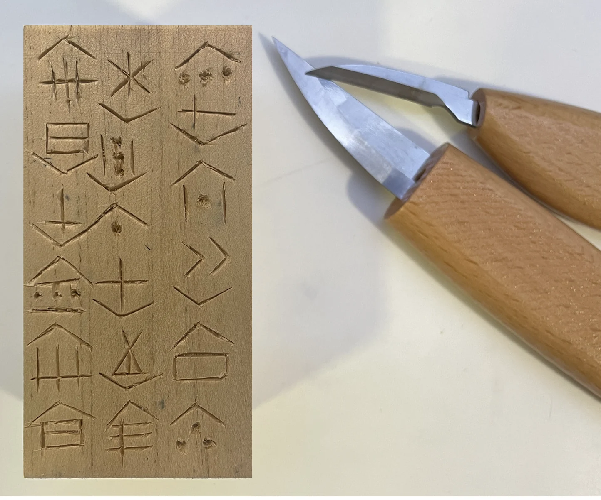

The Materiality of Text：虚构帮派的书写系统
为《荒野大镖客2》中的范德林帮设计一套用于传递任务与局势信息的虚构书写系统。
这是一个以《荒野大镖客2》中的范德林帮为虚构使用群体的书写系统设计项目，探索如何结合特定群体的生活方式、时代背景与行动需求，建立一套隐蔽而高效的符号语言。1899 年的西部亡命徒长期面临追捕，他们不需要记录日常琐事，却迫切需要一种能在野外快速留信、传递劫案部署与安危局势的暗语系统。我从苏美尔楔形文字、北美原住民音节文字及《降临》等真实与虚构文字系统的研究出发，从枪械、马车、火车及帮派活动中提取图形并简化为字形，最终完成了包含组合语法、物理书写约束与印刷字形样张的完整符号体系。
从游戏物件到符号语法测试
为让符号与帮派经验直接挂钩，我从角色最常接触的物件与行动中抽象基础字形——例如以步枪横举表示攻击、竖背表示警戒，以无声武器弓箭代表潜行，并借用帮派作案时戴上与摘下蒙面巾的动作，引入上下弧线作为核心语法标记。我把游戏中的一场火车劫案拆成八个步骤，用同一事件反复测试了三套弧线规则（“己方/敌方” vs “危险/安全” vs “计划/完成”），最终确认第一套最不易产生歧义；随后建立 7×7 网格构字规范，并借助 LATCH 分类体系检验 21 个核心符号在形态、单复数层级与刻画耗时上的平衡。

物理媒介反推字形：木板刀刻与手写简化
文字形态从来不是脱离载体的纯平面造型。考虑到帮派成员在野外多以随身匕首刻划木板或匆忙手写留信，我直接用刻刀在木块上进行了实体刻字测试。实验立刻暴露出问题：弧线在木纹上极难下刀，原本模仿左轮手枪弹巢的“六圆环形排布”虽然形式特别，却严重浪费空间且难以判断阅读起点。受楔形文字的启发，我将弧线改为干脆利落的折角，放弃环形排布回归线性书写；随后又根据右手快速书写的肌肉习惯省略了冗余半弧，并通过多种笔触反复临写，让机械几何逐步长出贴近西部时代的粗粝手作质感。

游戏场景实战验算：火车劫案记录
完成基础符号与语法规则后，我将系统回填进《荒野大镖客2》的实机劫案画面中进行实战验算。每张画面仅以极简的组合符号标注潜行、瞄准、劫车与双方态势，验证这套系统在真实行动语境下的信息密度——即使不逐字翻译，熟悉共同语境的帮派成员也能凭符号组合自动补全完整句意。


印刷样张与展墙实拍
最终，我将定稿字形整理为三套高对比配色（白底黑字、黑底红字、红底黑字）的字形样张，并印刷成 A2 实体海报在工作室展墙呈现，让符号的外观、语义结构与实体质感共同回应范德林帮所处的时代氛围。


项目总结
这个项目让我第一次系统体验了“文字如何被使用者的处境与工具所塑造”。从最初偏重逻辑与分类的抽象草图，到被木刻刀的物理阻力倒逼出折角与简化笔画，最关键的转折恰恰发生在走出电脑屏幕、回到真实媒介之后。一套有说服力的虚构书写系统，本质上是对群体生活方式与沟通成本的视觉转译。